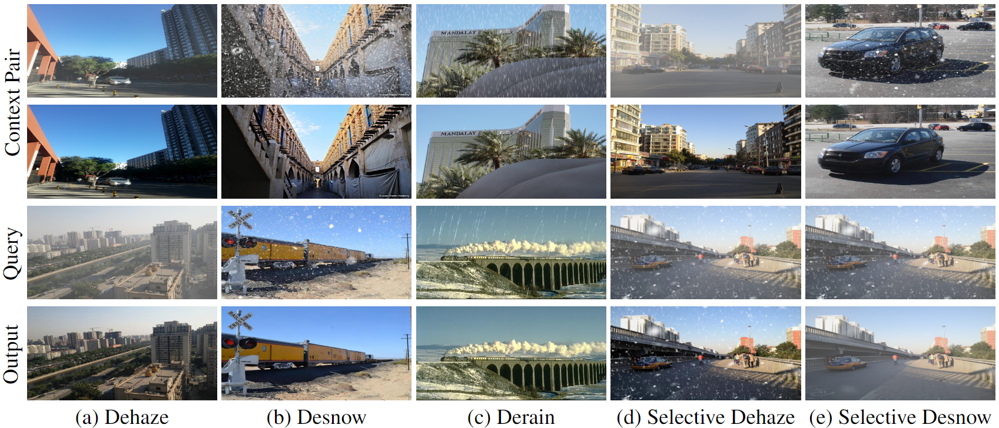
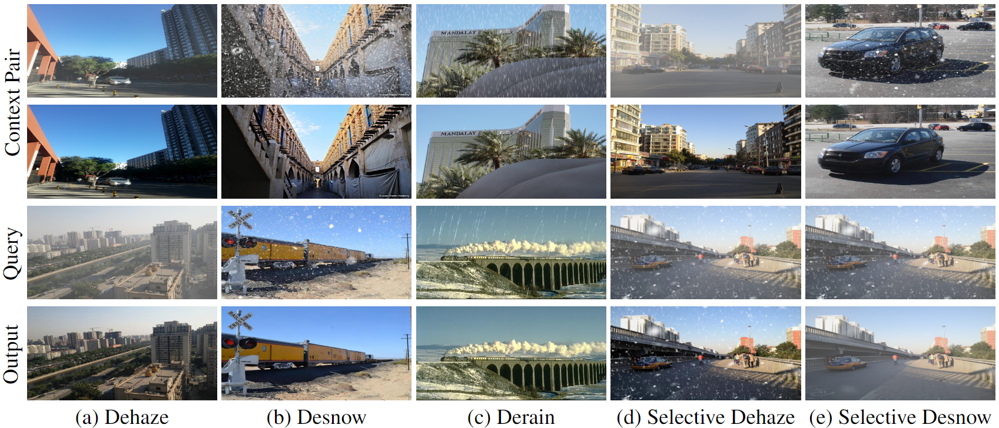

Abstract
 

Illustration of AWRaCLe: Our visual in-context learning approach for all-weather image restoration. The first two rows are the context pair. The third row is the query image that needs to be restored and the fourth row is our output. (d) and (e) show results for selective removal of haze and snow, respectively, from an image containing their mixture.
All-Weather Image Restoration (AWIR) under adverse weather conditions is a challenging task due to the presence of different types of degradations. Prior research in this domain relies on extensive training data but lacks the utilization of additional contextual information for restoration guidance. Consequently, the performance of existing methods is limited by the degradation cues that are learnt from individual training samples. Recent advancements in visual in-context learning have introduced generalist models that are capable of addressing multiple computer vision tasks simultaneously by using the information present in the provided context as a prior. In this paper, we propose \textit{\textbf{A}ll-\textbf{W}eather Image \textbf{R}estor\textbf{a}tion using Visual In-\textbf{C}ontext \textbf{Le}arning} (AWRaCLe), a novel approach for AWIR that innovatively utilizes degradation-specific visual context information to steer the image restoration process. To achieve this, AWRaCLe incorporates Degradation Context Extraction (DCE) and Context Fusion (CF) to seamlessly integrate degradation-specific features from the context into an image restoration network. The proposed DCE and CF blocks leverage CLIP features and incorporate attention mechanisms to adeptly learn and fuse contextual information. These blocks are specifically designed for visual in-context learning under all-weather conditions and are crucial for effective context utilization. Through extensive experiments, we demonstrate the effectiveness of AWRaCLe for all-weather restoration and show that our method advances the state-of-the-art in AWIR.
Proposed Approach
 Block diagram of the proposed visual in-context learning approach for AWIR.
CLIP features are extracted from $I_{\texttt{d}}$ and $I_{\texttt{c}}$ which are subsequently fed to DCE blocks at different decoder levels, $l$.
CF blocks then fuse the degradation information obtained from the DCE blocks with decoder features, $F^{l}$, from the query image $I_{\texttt{q}}$. Finally, the restored image is generated.
Block diagram of the proposed visual in-context learning approach for AWIR.
CLIP features are extracted from $I_{\texttt{d}}$ and $I_{\texttt{c}}$ which are subsequently fed to DCE blocks at different decoder levels, $l$.
CF blocks then fuse the degradation information obtained from the DCE blocks with decoder features, $F^{l}$, from the query image $I_{\texttt{q}}$. Finally, the restored image is generated.
The main idea of our approach involves extracting relevant degradation-context such as the type and visual characteristics of degradations from a given image-ground truth pair to effectively restore a
query image with the same type of degradation. Toward this aim, we propose Degradation Context Extraction (DCE) and Context Fusion (CF) blocks that learn context information and fuse it with an
image restoration network to facilitate the restoration process. Specifically, we integrate our DCE and CF blocks with a slightly modified version of the Restormer network (see supplementary for details).
The DCE and CF blocks are added at each decoder level of Restormer for propagation of context information (multi-level fusion).
Block diagram of the proposed visual in-context learning approach for AWIR.
CLIP features are extracted from $I_{\texttt{d}}$ and $I_{\texttt{c}}$ which are subsequently fed to DCE blocks at different decoder levels, $l$.
CF blocks then fuse the degradation information obtained from the DCE blocks with decoder features, $F^{l}$, from the query image $I_{\texttt{q}}$. Finally, the restored image is generated.
The main idea of our approach involves extracting relevant degradation-context such as the type and visual characteristics of degradations from a given image-ground truth pair to effectively restore a query image with the same type of degradation. Toward this aim, we propose Degradation Context Extraction (DCE) and Context Fusion (CF) blocks that learn context information and fuse it with an image restoration network to facilitate the restoration process. Specifically, we integrate our DCE and CF blocks with a slightly modified version of the Restormer network (see supplementary for details). The DCE and CF blocks are added at each decoder level of Restormer for propagation of context information (multi-level fusion).
Results and Comparison
Quantitative comparisons of AWRaCLe with SOTA on the test sets described in Sec. 4.2. The values indicated are
placeholders for PSNR/SSIM. Degradation type (S-Snow, R-Rain, H-Haze) is indicated within brackets. The best result is in
bold, and second best is underlined.
Our approach achieves sota....
Qualitative comparisons of AWRaCLe with top performing approaches (TSMC, PromptIR and DiffUIR) on SOTS,
Rain100L, Rain100H and Snow100k datasets. Zoomed-in patches are provided for examining fine details.
Quantitative comparisons of AWRaCLe with SOTA on the test sets described in Sec. 4.2. The values indicated are
placeholders for PSNR/SSIM. Degradation type (S-Snow, R-Rain, H-Haze) is indicated within brackets. The best result is in
bold, and second best is underlined.
Our approach achieves sota....
Qualitative comparisons of AWRaCLe with top performing approaches (TSMC, PromptIR and DiffUIR) on SOTS, Rain100L, Rain100H and Snow100k datasets. Zoomed-in patches are provided for examining fine details.
BibTeX
@article{bibtexnarayan2024facexformer,
title={FaceXFormer: A Unified Transformer for Facial Analysis},
author={Narayan, Kartik and VS, Vibashan and Chellappa, Rama and Patel, Vishal M},
journal={arXiv preprint arXiv:2403.12960},
year={2024}
}